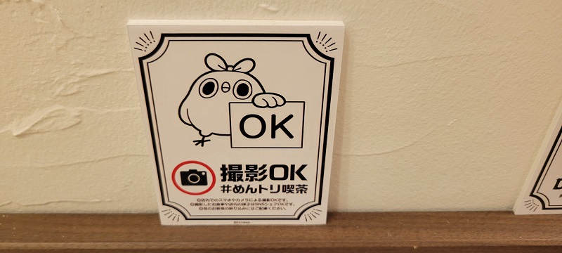
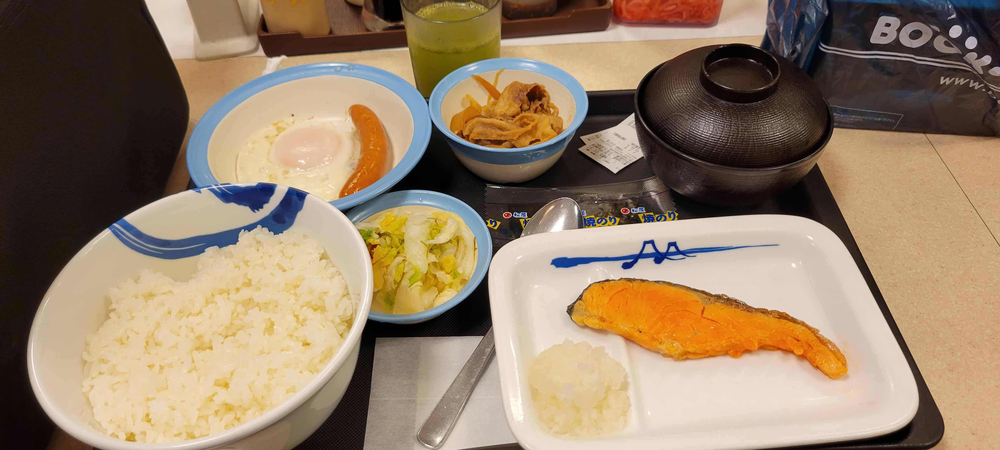
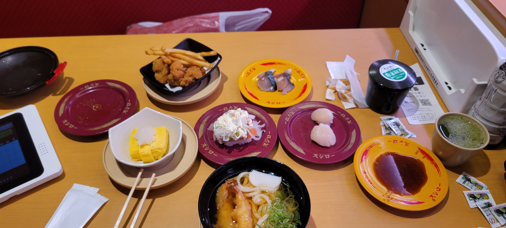
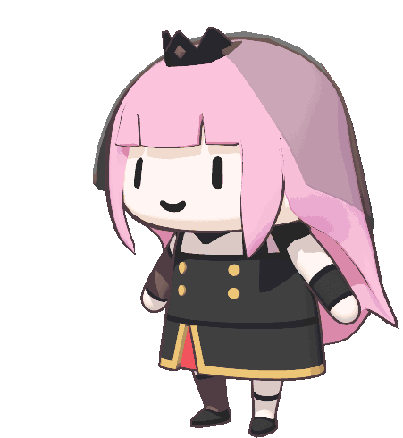
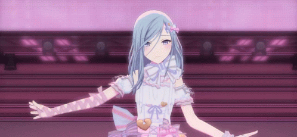

ＰｕｒｐｌｅＳｔｏｒｅ

おすすめ食べ物

松屋
安全･安心な食事をあなたに

スシロー
うまいすしを、腹一杯。うまいすしで、心も一杯。

牛かつ もと村
『牛かつを日本の食文化にする』という想いを胸に”牛かつ”の美味しさを実直に提供して参ります。
推しゲームとキャラ

アズールレーン
信濃：戦闘面はシューティングがベースでありながら、ある程度被弾を前提としたデザインとなっている。艦のレベル次第で回避率などが大きく向上するため、操作の苦手なプレイヤーでも育成面でのカバーが可能。また、海域1-3をクリアするとオートプレイが開放される。これにより、十分に育成された艦隊であれば片手間での周回プレイングもしやすくなっている。本作ではドロップ限定の艦も多数配置されているため、これらのコレクション目的で周回プレイを行うことが本作の目的のひとつとなっている

hololive
森カリオペ：グリム・リーパーの第一弟子。医療が発達している現代においては、死神として活躍する場面がなく、その代わりにVTuber活動で他人のソウルを収穫するつもりらしい。尊死している人のソウルも彼女の元へ行く模様。結局のところ、発言内容や声のイメージと違って、彼女は実は面倒見がよく、優しい心の持ち主である。

プロセカ
日野森雫：今でも人気を博しているアイドルグループ『Cheerful＊Days』の元センター。かつてのメンバー達とうまくいかず脱退してしまったことにわだかまりを持っていたが、MORE MORE JUMP！初のテレビ出演での共演をきっかけに少しだけ和解し、前向きに進んでいる。